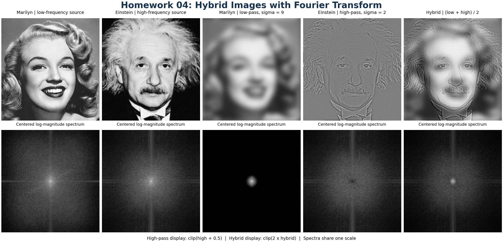

Homework 04: Hybrid Images with Fourier Transform
Total: 5 points
Submission: Gradescope Programming Assignment
Work: Individual
Objective
Create a hybrid image that combines the smooth structure of one image with the fine details of another. You will use Marilyn and Einstein, then view the result at different sizes.
Use the course cv Conda environment and OpenCV (cv2). Do not use generative AI to solve this homework. The goal is to understand how Fourier coefficients can be modified and used to reconstruct an image.
Starter files
Download these files into the same folder:
{kind=link}
{kind=link}
Complete only these three functions in hw04.py:
log_magnitude_spectrum(image)
apply_frequency_filter(image, mask)
make_hybrid_image(image_low, image_high, sigma_low, sigma_high)The Gaussian filter helper, image loading, and plotting code are already provided. Leave them unchanged. Do not change the required function names or arguments.
The provided loader reads the images as grayscale numpy.float32 arrays in [0, 1]. Keep the supplied images unchanged: do not crop, resize, or realign them.
Tools and conventions
- Use
cv2.dft()andcv2.idft()for Fourier transforms. Do not use Fourier functions from NumPy, SciPy, or other libraries; usenp.roll()for centering. - Perform filtering by multiplying Fourier coefficients. Do not replace this step with spatial filters such as
cv2.GaussianBlur()orcv2.filter2D(). - Keep imports to
cv2,numpy,matplotlib, and the standard-library modules. - Return same-size, two-dimensional
float32arrays. Support odd, even, and non-square image dimensions, and do not modify the input arrays. - Keep signed values during computation. Do not clip, take absolute values of filtered images, or normalize intermediate results. The supplied display code handles visualization.
The grader supplies valid inputs. You do not need to write input-validation code.
Part 1 — Display the Fourier spectrum
Complete:
def log_magnitude_spectrum(image):
...Compute the image’s complex DFT, center its zero-frequency component, and return its log-magnitude spectrum:
\[ S = \log(1 + |F|). \]
This function will be used for the input images, filtered components, and final hybrid. Some of those images contain negative values.
Hints:
- Use
cv2.dft(image, flags=cv2.DFT_COMPLEX_OUTPUT). Its output has shape(M, N, 2): channel 0 is the real part and channel 1 is the imaginary part. - For an
M × Nimage, center the spectrum usingnp.roll(F, (M // 2, N // 2), axis=(0, 1)). Shift only the two image axes. - Use
cv2.magnitude()on the real and imaginary channels, followed bynp.log1p(). - Do not divide the forward DFT by the number of pixels or normalize the log-magnitude image to
[0, 1].
Part 2 — Use the provided Gaussian filter
There is nothing to implement in this part. The starter includes:
gaussian_frequency_mask(shape, sigma)It returns an image-sized Gaussian low-pass mask, already centered for use with your centered Fourier coefficients. Call it with the image’s shape and the desired smoothing strength:
low_pass_mask = gaussian_frequency_mask(image.shape, sigma)
high_pass_mask = 1 - low_pass_maskA larger sigma gives stronger smoothing. The low-pass mask retains smooth structure; its complement retains fine details. You do not need to construct a spatial kernel, derive a formula, or build a frequency-coordinate grid.
Part 3 — Filter and reconstruct an image
Complete:
def apply_frequency_filter(image, mask):
...Use the supplied mask to filter an image in the Fourier domain:
- Compute the image’s complex DFT with OpenCV.
- Center it in the same way as in Part 1.
- Multiply the complex coefficients by
mask. - Undo the centering.
- Apply OpenCV’s inverse DFT to obtain the filtered image.
Hints:
- Preserve both real and imaginary components. Part 1’s log-magnitude output is only for display; do not use it as the input to filtering or reconstruction.
F * mask[..., None]applies the same mask to both complex channels.- Undo the shift with
np.roll(F_filtered, (-(M // 2), -(N // 2)), axis=(0, 1)). The parentheses matter for odd dimensions. - Use
cv2.idft(..., flags=cv2.DFT_SCALE | cv2.DFT_REAL_OUTPUT)to obtain a correctly scaled, real-valued image. - Use the original image size with no padding. This corresponds to periodic boundary behavior. The supplied masks are compatible with a real-valued inverse result.
- A high-pass result contains negative values. Keep them: taking an absolute value or clipping changes the result.
Part 4 — Build the hybrid image
Complete:
def make_hybrid_image(image_low, image_high, sigma_low, sigma_high):
...Connect the provided mask helper to your filtering function:
- Call
gaussian_frequency_mask(image_low.shape, sigma_low)to get the first image’s low-pass mask. - Pass
image_lowand that mask to yourapply_frequency_filter(). Store the result aslow. - Call the provided mask helper again, using
image_high.shapeandsigma_high. Subtract this second mask from 1 to get a high-pass mask. - Pass
image_highand the high-pass mask to yourapply_frequency_filter(). Store the result ashigh. - Compute the average and return all three images:
\[ I_{\mathrm{hybrid}}=\frac{\mathrm{low}+\mathrm{high}}{2}. \]
Return the arrays in this order: (low, high, hybrid). Do not clip or rescale them. An equivalent high-pass implementation is to subtract a Fourier low-pass result from image_high.
The provided driver calls this function with Marilyn first, Einstein second, sigma_low=9, and sigma_high=2. Use the function’s arguments so it also works for other image pairs and positive sigma values.
Your Part 1 function is used by the provided driver to display the spectra. You do not need to call it inside make_hybrid_image().
Run and inspect your program
conda activate cv
python hw04.pyOr specify the image paths explicitly, in low-frequency source, high-frequency source order:
python hw04.py marilyn.png einstein.pngThe driver saves:
hw04_output.png— the sources, filtered components, hybrid, and spectra;hw04_distance.png— the hybrid at decreasing sizes; andhw04_hybrid.png— the raw hybrid saved as a grayscale PNG.
Compare your results to these targets:

Full-size comparison · Distance view · Raw hybrid
{kind=link}
{kind=link}
{kind=link}
For display, the provided code offsets the signed high-pass image so zero appears gray and brightens the averaged hybrid. These display adjustments do not change your returned arrays. Compare each output with its corresponding reference.
Before submitting, check these simple properties locally:
- A constant image should have only one nonzero log-spectrum value, at the center.
- Passing an all-ones mask,
np.ones_like(image), to your filter should recover the original image within small floating-point roundoff. An all-zeros mask should return zeros. - High-pass filtering a constant image should produce approximately zero.
- Inspect the supplied-image output at both large and small sizes. It should match the corresponding reference, apart from small numerical differences.
These checks guide debugging; you do not need to submit their results or write a report.
What to submit
Submit exactly one file, hw04.py, to Gradescope. Do not submit input images, output images, screenshots, or a notebook. The autograder supplies its own inputs.
Submission limit — important
You may make at most 5 Gradescope submissions. Test and debug locally before submitting.
- Submissions 1–5 are graded normally.
- Submission 6 and every later valid submission receive zero points for that submission.
- A Gradescope infrastructure failure marked as an autograder error does not count toward the limit. Errors in your submitted code do count.
Grading
HW04 is worth 5 points and is fully autograded.
The autograder checks:
- required functions and interfaces;
- centered Fourier log-magnitude spectra;
- frequency-domain filtering and reconstruction, including signed values and odd/non-square image sizes;
- correct hybrid-image construction; and
- whether the script reproduces the required result and saves the expected output files.
Use the required OpenCV transforms; prohibited transform or spatial-filtering implementations fail the affected tests. Gaussian-mask construction is provided and is not a separately graded task. Small floating-point differences are allowed; the saved hybrid pixels may differ from the reference by at most one gray level.
Basic public tests provide immediate detailed feedback. Before the Gradescope late due date, private tests provide only one overall pass/fail indicator. Individual private tests, scores, and feedback become visible after the late due date. Passing public tests does not guarantee full credit.